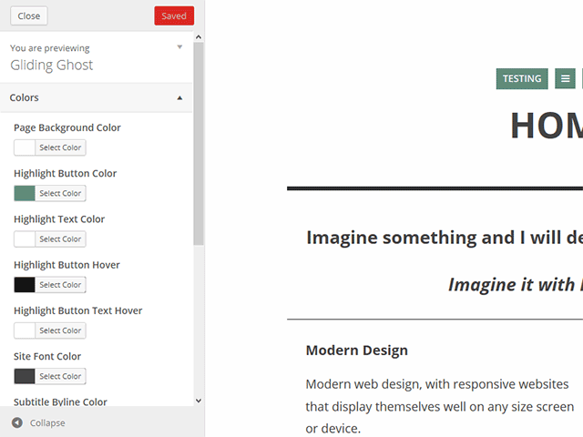

"Gliding Ghost 1.0 Wordpress Theme" Documentation by “imaginalgo”
"Gliding Ghost 1.0 Tema para Wordpress"
Created: December 14, 2013
By: imaginalgo
Gracias por tu interés en Gliding Ghost for Wordpress. Este es un tema sencillo y minimalista basado en el tema Glider para WordPress, y el tema Ghostwriter para el Ghost CMS. Destacados en este tema son: carga de entradas via AJAX, diseño adaptable, apoyo para tipos de entradas: portafolio, y más. Este guía ayudará a comenzar.
Contenidos
- Lo nuevo
- Funciones de Gliding Ghost
- Instalar Gliding Ghost
- Personalizar Gliding Ghost
- Estilos
- Ayuda y Preguntas Frecuentes
- Créditos
A) Lo nuevo - contenidos
Lo siguiente es una lista de cambios, reparaciones y novedades en versión 1.0:
- Este es el lanzamiento inicial. Todo es nuevo. ¡Disfrute!
B) Gliding Ghost Features - contenidos
Gracias por tu interés en Gliding Ghost for Wordpress. Este es un tema sencillo y minimalista basado en el tema Glider para WordPress, y el tema Ghostwriter para el Ghost CMS. Destacados en este tema son: carga de entradas via AJAX, diseño adaptable, apoyo para tipos de entradas: portafolio, y más. Este guía ayudará a comenzar.
Este tema se expande por sobre las fuentes de inspiración original en varias maneras: agrega una barra en la cabeza donde se puede colocar un menú adicional o un Widget. Se lo puede esconder/mostrar. (inspiración: Tom Creighton, creador del tema Glider para WordPress) Una lista de entradas para publicaciones normales además de los del portafolio. Finalmente, el tema tiene una plantilla para hacer una Tabla de Contenidos., donde se puede ubicar dos menús de navegación. (páginas y sitios sociales, por ejemplo) Inspiración para esta plantilla y orientación de los elementos son gracias a Yaron Schoen. (visitar su sitio - inglés)
Espero que disfrutes este tema nuevo para WordPress..
Atentamente,
Mike Walsh, Imaginalgo.com
C) Instalar Gliding Ghost - contenidos
- Ingresar a tu cuenta de Wordpress como administrador y activar el tema Gliding Ghost. (si estás usando MultiSitio, acuérdate de que primero hay que "permitir" el theme en el panel del Súper Administrador y no aparecerá como opción).
- Navegación Principal (Tabla de Contenidos): Crear una página. Dale el nombre de portada o como quieres. Luego, en Atributos de la Página, donde dice Plantilla, elige Table of Contents. En esta página aparecerá la navegación para su sitio. Aparecerá cuando alguien pincha el botón de menú. (el que tiene tres lineas horizontales) Dos de los tres menús posibles en este tema aparecerán aquí.
- Página de Inicio: Ahora vaya a Opciones > Lectura y elige la página que creaste en Nº 2 como la página inicial. Note: no elija la página de contenidos que creaste en no 2.
- Si te gustaría incluir una portafolio en tu sitio web, favor de instalar y activar el plugin Portfolio Post Type. (se ve una notificación en la parte superior de la página) Ahora se verá un botón con un maletín, entre los botones del menu y de las entradas. Aquí están los ítemes del portafolio.
- Gliding Ghost utiliza el Personalizador nativo a WordPress para cambiar personalizar el tema. Sigue leyendo para saber más.
D) Personalizar Gliding Ghost - contenidos
Gliding Ghost utiliza el Personalizador nativo de WordPress. Vaya a Apariencia > Personalizar.
Las opciones deben ser bastante obvios, pero aquí es una descripción:
- Coloers: Aquí se cambian los colores del fondo, letra, enlaces, botones y más.
- Navigación: Aquí se establecen los tres menús para navegar. También puedes mostrar/esconder la barra de cabeza.
- Página Principal: Elige una página de inicio.
- Lista de entradas: Cambia los colores de los enlaces en la lista de entradas.
- Tabla de Contenidos: Establece la página que mostrará la Tabla de Contenidos, cambia los colores y elige los dos títulos de los menús.
- Pie: Establece el texto y créditos en el pie del tema.
- CSS Personalizado: Coloque código personalizado de CSS para tu sitio. Tomará presedencia por sobre los estilos del tema.
- Google Analytics: Aquí escribe tu código de Google Analytics.
E) Estilos - contenidos
En Gliding Ghost, se puede crear Botones y Columnas utilizando Estilos. Son similares a Shortcodes, pero no dejan atrás código feo si decides cambiar temas en el futuro. A continuación ve como se los usan:
- Botones:
Si quieres crear un botón, primero seleccionar el texto en editor. Luego, pincha el menú desplegable Styles y elige el color del botón que quieres. Automaticamente se aplicará los estilos. Se puede hacer botones de texto y/o enlaces.

- Columnas:
Si quieres dividir texto en columnas, simplemente seleccionar el párrafo y elige el tamaño de la columna deseada. Asegúrate que la última columna en la fila usa la Columna Ultima opción.

F) Ayuda y Preguntas Frecuentes - contenidos
Está sección tiene algunas de las preguntas más frecuentes que recibo. Por favor lea esta sección antes de preguntar algo ya contestado aquí!
- ¿Dónde están las barras laterales, formulario de contacto, shortcodes, imágenes deslizantes, otras funciones? No hay. Este tema se diseñó para ser liviano, sencillo y minimalista.
- ¿Se puede usar Shortcodes o Plugins con este tema? You can certainly try. This theme has not been tested with every WordPress theme. No promises.
- ¿Puedo vender este tema? No. Lo ofrezco gratis. Debes hacer igual.
- ¿Sabes que este tema se parece mucho el tema Ghostwriter para Ghost CMS? Sí, lo sé. Convertí Ghostwriter a WordPress, combinándolo con elementos del tema Glider, creado por Tom Creighton. Agregué varios funciones nuevos, además.
- ¿Eres el creador del plugin recomendado Portfolio Post Type? No. Esto sería Devin Price de WPTheming.com. Si tienes una pregunta respeto al plugin, favor de preguntarlo. (y no a mi)
- ¿Cómo cambio Gliding Ghost a español?Primero, es necesario tener Wordpress instalado en Inglés/Español O tener los documentos de idiomas correspondientes. (lea sobre esto en el sitio Wordpress.org) Después de hacer esto, vaya a Opciones>General. La última opción permite cambiar el idioma. Elige lo que quieres.
G) Créditos - contenidos
It was a lot of fun to develop this theme. But, I couldn't have done it with my own knowledge and artwork, so I would like to thank the following for the necessary inspiration and knowledge:
- La paciencia de mi esposa.
- La abundancia de mi café
- The music of Silvio Rodríguez, which kept me company many a long night
- Wordpress, por un programa maravilloso…especialmente con versión 3.8.
- roryg, por diseñar el tema Ghostwriter para Ghost CMS
- Smashing Magazine, por compartir la colección de íconos gratis Small Icons. (se utilizó el fantasma estilo Pac-Man)
- Tom Creighton, por el tema Glider para WordPress, que ayudó en el desarrollo de Gliding Ghost, y por la barra de cabeza usado en tomcreighton.com.
Otra vez, gracias por descargar y usar este tema. ¡Buena suerte!
imaginalgo